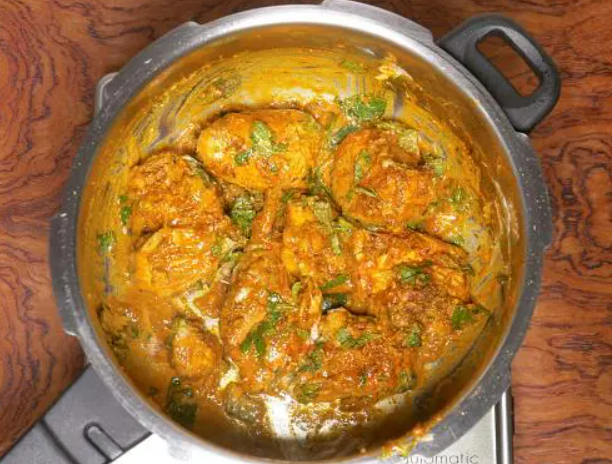
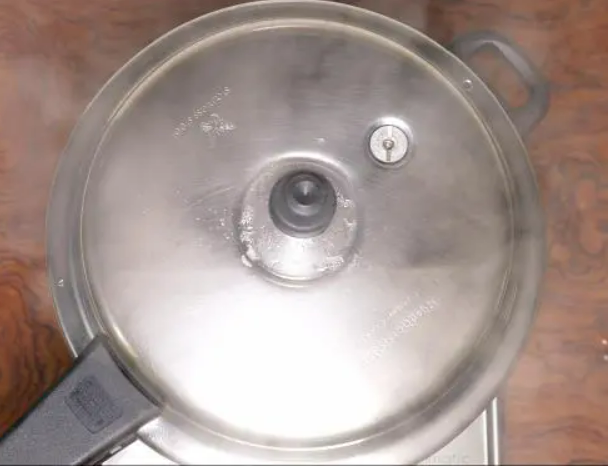

UNIQUE CHICKEN BIRIYANI RECIPE
Preparation
1. This recipe needs half kg chicken. Make few slits on all the chicken pieces and add to a large bowl.Then add
- 3 Tablespoons plain yogurt (Indian curd)
- 1 1/4 tablespoons ginger garlic paste
- 1/2 to 1 tablespoon garam masala (oo biriyani masala)
- 1/2 teaspoon salt
- 1/4 teaspoon ground turmeric
- 1/2 to 1 teaspoon red chili powder
- 1 tablespoon lemon juice

2. Mix everything well and marinate the chicken. Cover and set this aside for 1 hour.
3. Meanwhile add 2 cups basmati rice to a large pot and rinse it at least thrice. Drain and soak in fresh water for 30 mins.
Cook Chicken
4. Heat ghee or oil in a heavy bottom pot or pressure cooker. Make sure use a large one for this. Using whole spices is option but recommended. I use
1 bay leaf 4 green cardamoms 6 cloves 1 inch cinnamon piece 1 star anise 3/4 teaspoon shahi jeera (caraway seeds) 1 strand mace
5. Add thiny sliced onions. On a medium heat, fry them stirring often until uniformly light brown.
6. This is the color of the onions. Do't burn them as they leave a bitter taste.
7. Add marinated chicken & saute until it becomes pale for 5 minutes.
8. Lower the flame completely. Cover and cook until the chicken is soft, tender and completely cooked.
9. Check if the chicken is cooked by pricking with a fork or knife. It has to be just cooked and not overdone. Evaporate any excess moisture left in the pot by cooking further without the lid.
10. Taste test and add more salt if needed. I added 1/4 more salt here. Add
- 1/4 cup plain yogurt (indian curd)
- 1 teaspoon garam masala (or biriyani masala)
- 1/4 to 1/2 teaspoon red chili powder
- 2 tablespoons chopped mint leves (pudina) img
Make chicken biriyani
11. Mix everything well. Spread it evenly in a single layer.

12. Layer drained rice all over the chicken to a separate pot, pour three cups water and add 1/4 to 1/2 teaspoon salt if cooking in a pot start with three cups water at this stage and taste the water it must be slightly salty bring the water to a rolling boil two cups of these hot water across the sides of the cooker are pot for taste of the water over the rice gently.
13. level the rice gently on top add two tablespoons more mind leaves don't mix up everything the taste of the Biryani cooked in the shown method is good optionally you can Sprinkle two tablespoons fried onions and Sparrow soaked milk.

14. Finally cover the pot or cooker if a cooking in a pot cook on a medium heat until the rice is cooked completely if the rice is under cooked and there is no more water left at the bottom of the pot for 1 by 4 to 1 by 2 Cup boiling water at the stage how much water to add depends on the quality of basmati rice cooker until the Biryani rice is perfectly done greatly and fully cooked cover for 15 minutes if cooking in a cooker.

15. When the presure releases naturally, open the lid.Gently up with a fork.
16. chicken biriyani in layers-top layer with rice and bottom layer with chicken. Enjoy with raita
| Preparation time |
Cook time |
Total time |
Servings |
Author |
| 30 min |
2 hours |
150 min |
4 |
Adilakshmi |